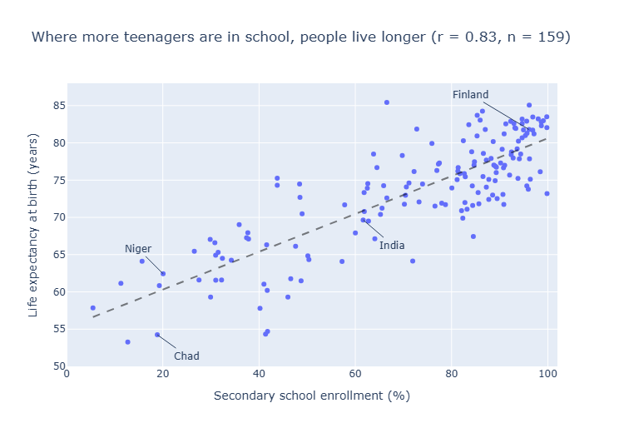
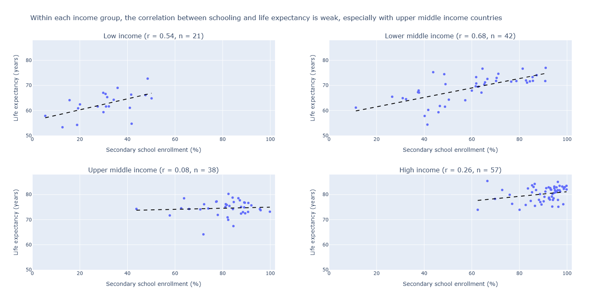

Proposition: Higher levels of education lead to increased health in society
FOR the Proposition

Design Decisions and Rationale:
- I decided to truncate the Y-axis so it starts at ’50 years’ as opposed to ‘0 years’
- Deceptiveness: -1
- I think this is a classic Y-axis tactic to make data seem like it has a wider variance than it does. In reality, the variance in 30 years’ life expectancy is large for humans, if the Y-axis was set to start at 0 though the visualization would not be as dramatic
- I am using a ‘Causal’ sounding title when the metrics are specifically ‘Correlative’
- Deceptiveness: -1.5
- The point of this graph is with a different title would be to show that there COULD be some effect from increased secondary school enrollment, on life expectancy. However, the title specifically is deceptive in trying to say it’s a DEFINITIVE thing that secondary school enrollment is causing life expectancy to go up, and even giving a ‘correlation’ metric for this. This unfortunately is a common deception technique to try to take away nuance from analyses.
- The background and data points are all in shades of blue
- Earnest: +0.5
- I wanted to keep the image as simple as possible, with a focus on conveying the data. I believe that point is made, with very definitive data markers for each country in the dataset, and labels showing that too.
AGAINST the Proposition

Design Decisions and Rationale:
- Consistent X and Y axes in all 4 scatterplots help ensure the message is conveyed across all income groups
- Earnest: +1
- The point of this visualization is to break out the correlation of life expectancy and school enrollment by income of countries. Specifically having 4 scatterplots, with the same styling, axes, labeling etc conveys that very well
- Having ‘r’ be the metric that changes does not explain specifically what is happening
- Deceptiveness: -0.5
- I believe to the regular, non-statistics savvy viewer the fact that the metric ‘r’ is changing, doesn’t mean much. People may think based on the slope of each graph being different, less-sloped scatterplot trendlines means there’s a lower life expectancy to schooling correlation, but the definitive ‘r’ correlation metric isn’t specific.
- I does not say or show that these points are countries in this photo
- Deceptiveness: -1
- Looking back at this graph, while assumptions can be made, nowhere does it state that these are ‘countries’ that have their secondary school enrollment, and life expectancy compared. It relies on people having seen the first graph, or assuming we’re talking about some population groups for the comparison.
Final Reflection
I would say this project was moderately hard. The hardest part of making these visualizations was not sourcing the data and creating the visualizations themselves. I was able to implement AI to help with the Plotly code for that. The hardest part of this project was deciding the specific data fields to compare that would make sense with the proposition I gave. There was a massive amount of data just in the one World Bank source, so choosing between fields like ‘Secondary school enrollment’ versus ‘Primary school enrollment’ really took a bit. The other challenge was showing everything that I wanted, in retrospect there are still changes I would like to make on the visuals, such as better labeling the X-axes and possibly choosing different colors for the different income groups.
I believe “ethical analysis and visualization” can mean the analysis and the supporting visualization convey a message that does not trick the viewer into believing false information. When showing data that might be skewed, missing nuance or flat out is incorrectly labeled, that is unethical. It might not be purely unacceptable to create analyses with cherry-picked, very specific data that supports a stance you have, but that can still be misleading, and an ethical analyst would ensure it’s noted that data could be missing.